USER MANUAL · 0.4.0
아이칸 연차관리
- 기준 버전0.4.0 (아이콘 v2)
- 기준일2026-10-30
- 운영체제Windows 10/11
- 필요없음 (Python·Excel 설치 불필요, 인쇄는 브라우저)
직원 정보, 연차·반차, 월별 근태, 야근 여부를 한 곳에서 관리하는 Windows 프로그램의 사용 설명서입니다. 처음 쓰는 분은 1장과 3~4장을, 날마다 기록하는 분은 5·7·8장을 먼저 보세요. 자주 하는 일은 17장에 업무별 예시로 모았습니다.
참고
이 문서는 프로그램 사용법을 설명합니다. 회사의 연차 발생 기준을 정하는 문서는 아닙니다. 화면 그림 속 직원 이름과 기록은 모두 가상의 예시입니다.
CHAPTER 01
처음 시작하기
배포 ZIP의 압축을 모두 풉니다.
압축을 푼
연차관리폴더에서연차관리.exe를 실행합니다.조회 연도·월과 직원 범위를 확인합니다.
Python이나 Excel을 별도로 설치하지 않아도 프로그램 실행과 엑셀 내보내기를 할 수 있습니다. 인쇄·PDF 저장에는 브라우저를 사용합니다.
주의
실행 파일 옆의 _internal 폴더는 프로그램 실행에 필요합니다. 실행 파일만 따로 옮기지 마세요. 다른 PC로 이동할 때는 데이터와 _internal을 포함한 연차관리 폴더 전체를 복사합니다.
처음 실행하면 포함된 초기 자료를 데이터/연차관리.db에 복사합니다. 이후에는 이 데이터 파일에 기록을 계속 저장합니다. 기존 데이터 파일을 초기 자료로 덮어쓰지 않습니다.
참고
프로그램은 개인 PC의 로컬 사용을 기준으로 합니다. 인사 자료를 외부 서버로 전송하지 않으며, 여러 PC 간 동시 편집·서버 동기화·사용자별 권한 관리는 제공하지 않습니다.
CHAPTER 02
이전 버전의 자료 이어 쓰기
새 폴더에서 실행하면 포함된 초기 자료가 표시됩니다. 이전 버전에서 추가한 기록을 이어 쓰려면 다음 순서로 옮깁니다.
이전 프로그램에서 백업·복원 → 백업 파일 저장을 선택합니다.
백업
.db파일을 별도 위치에 저장합니다.이전 프로그램을 종료합니다.
새 ZIP을 별도 폴더에 풀고 새 프로그램을 실행합니다.
백업·복원 → 백업에서 복원에서 2번 파일을 선택합니다.
직원 수, 최근 휴가 기록, 발생·이월일수와 직원 표시 순서를 확인합니다.
주의
확인이 끝날 때까지 이전 폴더와 백업 파일을 보관하세요. 같은 데이터 폴더를 사용하는 프로그램은 한 번에 한 창만 실행할 수 있습니다.
CHAPTER 03
화면 구성
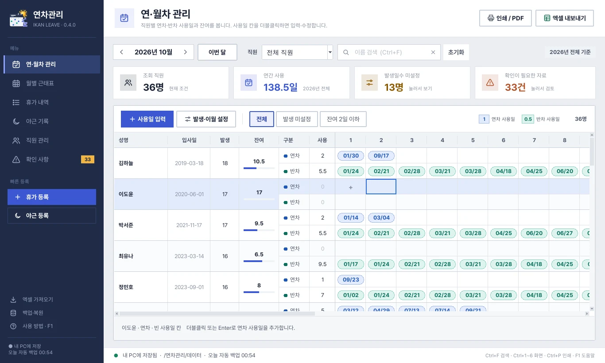
- 1왼쪽 메뉴여섯 화면으로 이동합니다. (Ctrl+1~6)
- 2빠른 등록휴가 등록·야근 등록으로 여러 직원을 한 번에 등록합니다(8장).
- 3인쇄 / PDF · 엑셀 내보내기상단의 연도·월과 직원 선택을 기준으로 출력합니다(11·12장).
- 4연도·월‹ › 로 한 달씩 이동, 이번 달로 오늘이 속한 달로 돌아옵니다.
- 5직원 선택 · 이름 검색직원 한 명을 고르거나 이름으로 좁힙니다. 인쇄 전에는 검색어를 비웁니다.
- 6조회 기준이 화면은 선택한 연도 전체를 보여 줍니다.
- 7요약 타일누르면 관련 화면이나 미설정 대상으로 이동합니다.
- 8사용일 입력 · 발생·이월 설정새 날짜 추가와 해당 연도 발생·이월·보정 설정(5·6장).
- 9잔여·막대잔여일수와 사용 비율. 발생 미설정은 숫자 0과 구분해 표시합니다.
- 10날짜 칩파란색 연차, 초록색 반차. 더블클릭하면 그 기록을 수정합니다.
- 11빈 칸 +더블클릭하거나 Enter로 새 사용일을 추가합니다.
- 12표 아래 안내선택한 칸의 내용과 입력 방법이 나옵니다.
| 위치 | 기능 |
|---|---|
| 왼쪽 메뉴 | 연·월차 관리, 월별 근태표, 휴가 내역, 야근 기록, 직원 관리, 확인 사항 |
| 빠른 등록 | 휴가 등록, 야근 등록 |
| 왼쪽 아래 | 엑셀 가져오기, 백업·복원, 사용 방법 |
| 위쪽 제목 띠 | 현재 화면 이름, 인쇄 / PDF, 엑셀 내보내기 |
| 조회 막대 | 연도·월, 이번 달, 직원 선택, 이름 검색, 초기화 |
| 요약 타일 | 조회 직원, 연간 사용, 발생일수 미설정, 확인이 필요한 자료 |
| 표 아래 안내 | 선택한 칸의 내용과 입력·수정 방법 |
| 맨 아래 상태줄 | 데이터 저장 위치, 자동 백업 상태, 작업 결과 |
표의 칸을 한 번 누르면 선택 표시가 나타납니다. 선택만으로 데이터가 바뀌지 않습니다. 입력창에서 저장을 눌러야 기록이 반영됩니다. 취소하거나 Esc로 닫으면 해당 입력창의 변경을 저장하지 않습니다.
CHAPTER 04
연도·월과 직원 조회하기
조회 막대의 연·월 글자를 눌러 원하는 연도와 월을 선택합니다.
양옆의
‹·›를 누르면 이전·다음 월로 이동합니다.이번 달을 누르면 오늘이 속한 연도·월로 돌아옵니다.
직원 목록에서 전체 직원 또는 한 명을 고릅니다.
이름 검색에 입력하면 조회 결과가 바로 좁혀집니다.
✕로 검색어를 지웁니다.
화면 오른쪽 위의 조회 기준도 함께 확인하세요.
| 화면 | 조회 기간 |
|---|---|
| 연·월차 관리 | 선택한 연도 전체 |
| 월별 근태표 | 선택한 연도·월 |
| 휴가 내역 | 선택한 연도 전체 |
| 야근 기록 | 선택한 연도·월 |
연·월차 관리와 휴가 내역은 월을 바꾸더라도 같은 연도 전체 자료를 보여줍니다. 화면별 필터로 미설정·잔여 2일 이하·휴가 종류·재직/퇴사·미확인 자료를 좁혀 볼 수 있습니다. 요약 타일을 눌러 관련 화면으로 이동할 수도 있습니다.
주의
인쇄·엑셀 내보내기는 상단의 전체 직원 또는 선택 직원 한 명을 기준으로 합니다. 화면의 선택 칸이나 종류 필터만을 출력하는 기능은 아닙니다. 출력 전 이름 검색을 비우고 기간과 직원을 다시 확인하세요.
4.1 조회 타일과 숫자 읽는 법
| 표시 | 해석할 때 확인할 점 |
|---|---|
| 조회 직원 | 상단 직원·이름 검색 조건에 해당하는 연간 조회 대상 직원 수입니다. 월별표의 직원 수와 다를 수 있습니다. |
| 연간 사용 | 선택 연도 전체의 총 사용량입니다. 현재 월만의 사용량이 아닙니다. 사용 보정도 포함합니다. |
| 발생일수 미설정 | 현재 조회 대상 중 해당 연도의 발생일수가 없는 직원 수입니다. 눌러 미설정 대상만 볼 수 있습니다. |
| 확인이 필요한 자료 | 보관된 전체 확인 사항의 미확인 건수입니다. 조회 연도·월의 기록 수와 일치하지 않을 수 있습니다. |
| 월별표의 차감 | 해당 월의 연차 차감 합계입니다. 연차 1일, 반차 0.5일로 계산합니다. |
| 월별표의 연간 잔여 | 해당 연도 전체 기준의 잔여입니다. 월별 잔여를 따로 계산한 값이 아닙니다. |
| 그날 인원 | 그 날짜에 휴가 기록 또는 야근 기록이 있는 인원입니다. 일수 합계가 아니므로 반차 2명이 1명으로 합쳐지지 않습니다. 근태 메모만 있는 경우는 휴가 인원으로 세지 않습니다. |
초기화는 전체 직원으로 돌아가고 이름 검색 및 연·월차·휴가 내역·직원 관리의 화면 필터를 전체로 돌립니다. 연도·월이나 저장한 기록을 지우는 기능이 아닙니다. 확인 완료 항목까지 볼지는 확인 사항 화면에서 별도로 선택합니다.
CHAPTER 05
연·월차 관리: 사람별 사용 날짜 입력
직원 한 명을 연차·반차 두 줄로 묶어 표시합니다. 연차 사용일은 파란색, 반차 사용일은 초록색 칩으로 구분됩니다. 발생일수가 없으면 미설정 표시, 잔여가 음수이면 빨간 글자로 표시됩니다.
5.1 사용일 추가
원하는 직원의 연차 또는 반차 줄을 선택합니다.
사용일 입력을 누르거나 빈 사용일 칸의
+를 더블클릭합니다.날짜·구분·메모를 입력합니다. 날짜는
YYYY-MM-DD로 입력하거나 달력에서 선택합니다.내용을 확인하고 저장을 누릅니다.
저장한 사용일은 날짜순으로 정리됩니다. 같은 기록이 월별 근태표와 휴가 내역에도 반영되고 잔여일수가 다시 집계됩니다. 연차는 1일, 반차는 0.5일입니다.
5.2 사용일 수정·삭제
- 날짜 칩을 더블클릭하면 해당 기록을 수정할 수 있습니다.
- 같은 직원·같은 날짜의 중복 기록은 저장하지 않습니다.
- 다른 연도의 기록은 조회 연도를 바꾼 뒤 입력합니다.
- 삭제는 휴가 내역에서 해당 기록을 선택하고 선택 삭제를 사용합니다.
- 오른쪽 날짜가 보이지 않으면 가로 스크롤로 이동합니다.
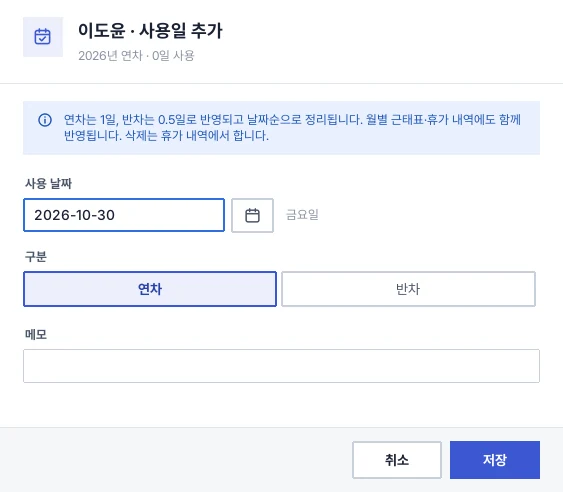
5.3 표의 칸과 색상
| 칸·표시 | 내용과 조작 |
|---|---|
| 성명·입사일 | 직원 식별 정보입니다. 직원 정보 자체는 직원 관리에서 수정합니다. |
| 발생 | 해당 연도의 설정 값입니다. 이월이 있으면 함께 표시될 수 있습니다. 자세한 구성은 마우스를 올려 확인합니다. |
| 잔여·막대 | 현재 잔여와 사용 비율을 나타냅니다. 발생 미설정은 숫자 0과 구분합니다. |
| 구분 | 연차 또는 반차 행입니다. 사용일 입력 전에 올바른 행을 선택합니다. |
| 사용 | 해당 행에 등록한 날짜들의 차감 합계입니다. 반차 날짜 4개는 2일입니다. |
| 날짜 칩 | 한 건의 사용 기록입니다. 마우스를 올려 전체 날짜·요일·메모를 확인하고, 더블클릭해 수정합니다. |
| 빈 칸의 + | 새로운 사용일을 추가합니다. |
참고
사용일 입력 단추는 새 날짜 추가용입니다. 기존 기록을 고치려면 해당 날짜 칩을 더블클릭하세요. 연차·반차의 구분을 바꾸면 같은 기록이 해당 구분의 행으로 이동하고 사용량이 다시 계산됩니다.
CHAPTER 06
발생·이월일수 설정과 집계 기준
연·월차 관리에서 직원을 선택하고 발생·이월 설정을 누릅니다. 이름·발생 칸을 더블클릭해도 설정할 수 있습니다.
| 항목 | 의미 |
|---|---|
| 발생일수 | 해당 연도에 회사에서 확정한 발생일수 |
| 이월일수 | 잔여에 더할 이월 값 |
| 사용 보정 | 날짜별 사용량에 추가할 조정 값 |
| 설정 메모 | 설정 이유나 확인 근거 |
계산은 다음 기준을 사용합니다.
총 사용 = 날짜별 사용 + 사용 보정
잔여 = 발생 + 이월 − 총 사용
발생일수가 없으면 잔여를 0으로 추정하지 않고 미설정으로 표시합니다. 새 연도의 발생·이월일수도 자동으로 추정하지 않습니다. 연도를 바꾸고 회사에서 확인한 값을 입력하세요. 전년도 기록은 삭제하지 않고 계속 보관합니다.
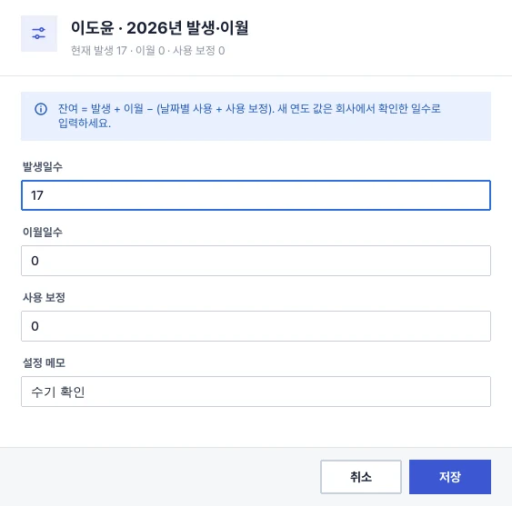
6.1 계산 예시
다음 값은 사용법 설명을 위한 예시입니다.
| 항목 | 예시 값 |
|---|---|
| 발생 | 15일 |
| 이월 | 2일 |
| 연차 사용 | 3일 |
| 반차 사용 | 반차 4건 = 2일 |
| 사용 보정 | 0.5일 |
| 총 사용 | 3 + 2 + 0.5 = 5.5일 |
| 잔여 | 15 + 2 − 5.5 = 11.5일 |
연차·반차 행의 날짜 합계만 더하면 5일이지만, 총 사용에는 사용 보정 0.5일도 포함됩니다. 화면의 잔여가 날짜 개수만으로 계산한 값과 다르면 이월·사용 보정을 먼저 확인하세요.
주의
발생일수에 0을 입력한 상태는 미설정과 다릅니다. 0은 실제로 설정된 값이며, 이월·사용량에 따라 잔여가 0 또는 음수가 될 수 있습니다.
6.2 새 연도를 시작할 때
전년도 자료를 백업합니다.
조회 연도를 새 연도로 바꿉니다.
연·월차 관리에서 미설정 대상을 확인합니다.
직원별로 회사가 확정한 발생·이월일수를 입력합니다.
사용 보정이 필요한 경우 근거를 확인하고 설정 메모를 남깁니다.
직원 한 명의 설정·잔여가 맞는지 확인한 뒤 나머지 직원을 점검합니다.
전년도 내역을 삭제해 새 연도를 만드는 방식은 사용하지 않습니다.
CHAPTER 07
월별 근태표 입력
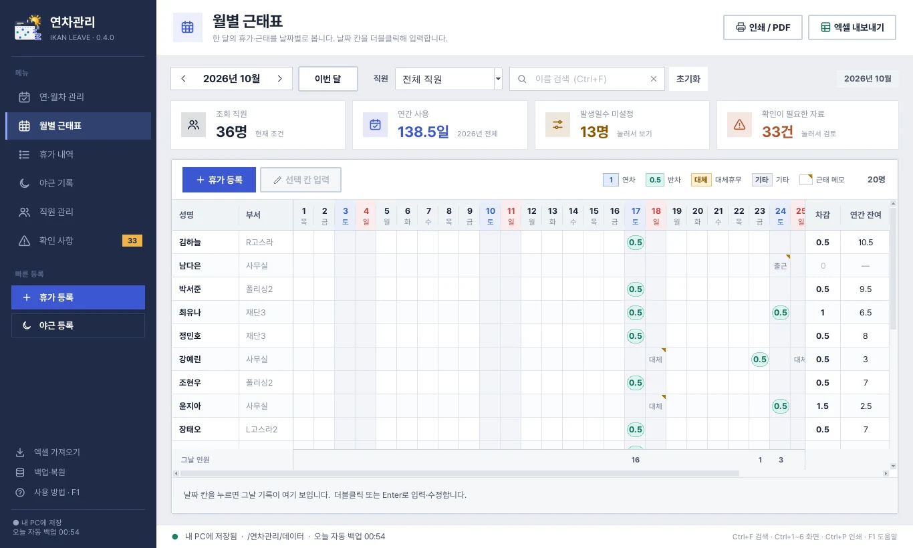
- 1고정 열성명·부서는 가로 스크롤해도 그대로 보입니다.
- 2날짜 머리글요일과 함께 토·일, 오늘 날짜를 구분해 표시합니다.
- 3반차 칩연차 1, 반차 0.5, 대체휴무·기타는 글자 칩으로 표시합니다.
- 4근태 메모오른쪽 위 작은 표시가 있는 칸은 근태 메모입니다. 마우스를 올리면 전체 내용이 보입니다.
- 5차감 · 연간 잔여이 달의 연차 차감 합계와 연도 전체 기준 잔여입니다.
- 6그날 인원그날 휴가 또는 야근 기록이 있는 사람 수(일수 합계가 아님).
- 7선택 칸 입력고른 날짜 칸의 입력창을 엽니다. 칸 더블클릭·Enter와 같습니다.
- 8범례연차·반차·대체휴무·기타·근태 메모 표시의 뜻.
이름·부서와 합계 열은 고정되어 있고 날짜 영역만 가로로 이동합니다. 날짜 머리글에 요일이 표시되며 토·일과 오늘 날짜를 구분합니다.
날짜 칸을 더블클릭하거나, 칸을 선택하고 Enter 또는 선택 칸 입력을 누릅니다.
구분을 선택하고 필요한 메모를 입력합니다.
저장 후 표와 차감일수를 확인합니다.
| 구분 | 연차 차감 |
|---|---|
| 연차 | 1일 |
| 반차 | 0.5일 |
| 대체휴무·기타 | 0일 |
| 근태 메모만 | 차감 없음 |
이 날짜 기록 비우기는 해당 날짜 기록을 비우는 항목입니다. 지울 직원과 날짜를 확인한 뒤 저장하세요. 근태 메모는 별도 표시되며, 칸에 마우스를 올려 전체 내용을 확인할 수 있습니다.
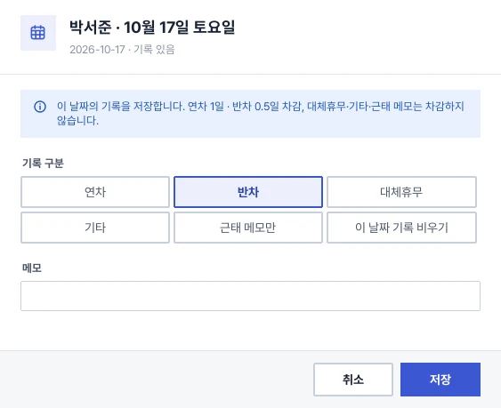
7.1 기록을 다른 구분으로 바꿀 때
| 작업 | 결과 |
|---|---|
| 연차를 반차로 변경 | 같은 날짜의 휴가 기록을 반차 0.5일로 바꿉니다. |
| 연차·반차를 대체휴무 또는 기타로 변경 | 휴가 기록은 남기되 해당 날짜의 차감을 0일로 바꿉니다. |
| 기존 휴가를 근태 메모만으로 변경 | 해당 날짜의 휴가 기록을 제거하고 차감 없는 근태 메모로 대체합니다. 휴가에 메모만 덧붙이는 기능과 다릅니다. |
| 이 날짜 기록 비우기 | 해당 날짜의 휴가와 근태 메모를 비웁니다. 야근 기록은 별도로 관리합니다. |
| 기존 휴가의 메모만 수정 | 휴가 구분을 그대로 두고 메모를 수정해 저장합니다. |
주의
근태 메모만으로 숫자 1, 1.0, 0.5를 넣지 마세요. 실제 연차·반차라면 해당 구분을 선택합니다.
7.2 날짜를 잘못 골랐을 때
월별표의 입력창은 선택한 날짜를 편집합니다. 다른 날짜로 옮길 기록은 휴가 내역의 선택 수정 또는 연·월차 관리의 날짜 칩 수정에서 일자를 바꾸세요. 바꾸려는 날짜에 같은 직원의 기록이 있으면 중복을 먼저 확인합니다.
CHAPTER 08
여러 직원에게 한 번에 등록
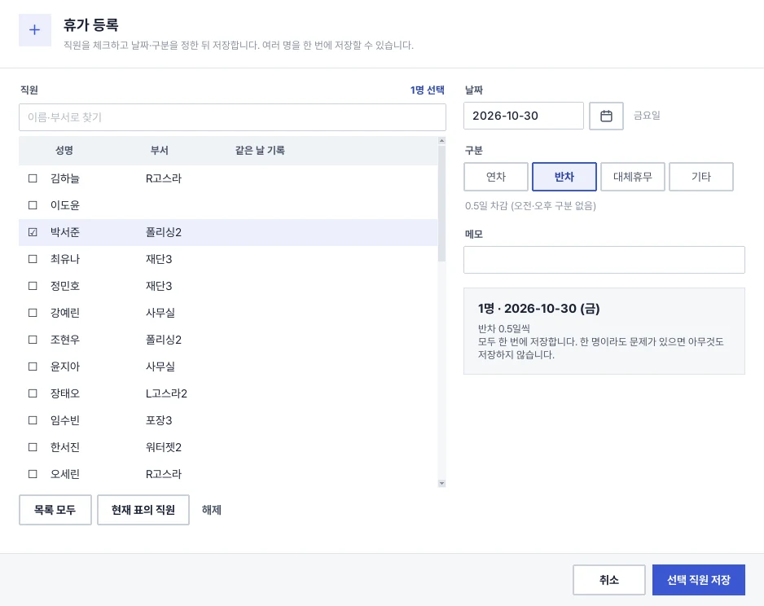
왼쪽의 휴가 등록 또는 야근 등록을 사용합니다.
이름·부서 검색과 체크 목록에서 대상을 고릅니다.
필요하면 목록 모두 또는 현재 표의 직원을 사용합니다.
날짜·구분·메모를 입력합니다.
오른쪽 요약에서 선택 인원, 날짜, 구분을 확인합니다.
저장을 누릅니다.
같은 날 기록이 있거나 입사 전·퇴사 후 날짜인 직원은 미리 표시됩니다. 선택 직원 중 한 명이라도 검증을 통과하지 못하면 이번 일괄 등록은 전부 저장하지 않습니다. 문제가 표시된 직원을 확인한 뒤 다시 등록하세요.
8.1 체크 목록 사용 시 확인할 점
- 등록 창에서 고른 날짜가 상단 조회 월의 날짜와 맞는지 다시 확인합니다.
- 이름·부서 검색으로 대상을 좁힌 뒤 체크한 인원과 오른쪽 저장 요약을 확인합니다.
- 현재 표의 직원은 현재 표에 표시되는 대상들을 선택할 때 사용합니다. 회사 전체 인원과 같다고 가정하지 마세요.
- 휴가 구분은 선택 직원 모두에게 동일하게 적용됩니다. 서로 다른 구분을 넣으려면 나누어 등록합니다.
- 저장 오류가 표시되면 창을 닫지 않고 날짜·대상·구분을 바로잡아 다시 저장할 수 있습니다.
참고
한 날짜에 오전·오후 반차를 각각 별도 건으로 나누어 등록하는 구조는 아닙니다. 반차는 한 날짜에 0.5일 한 건으로 관리합니다.
CHAPTER 09
휴가 내역과 야근 기록
9.1 휴가 내역
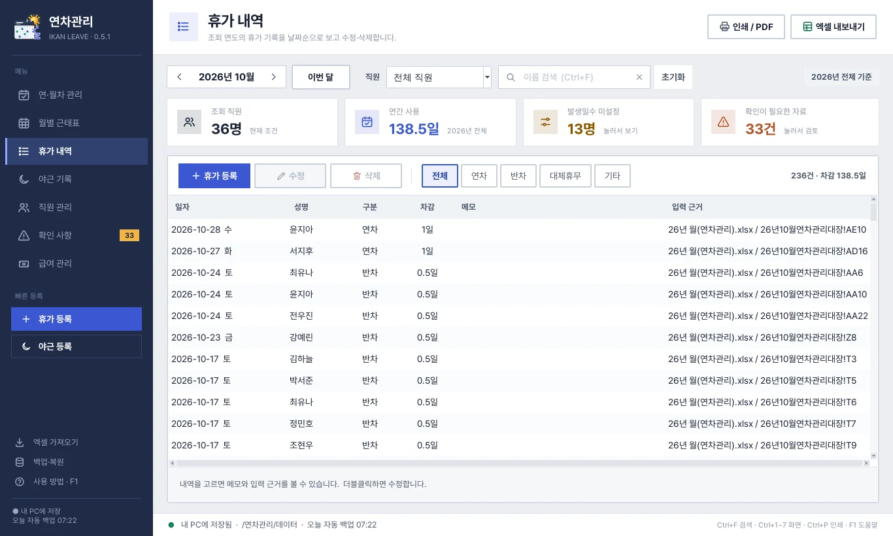
선택 연도의 휴가를 날짜 기준으로 확인합니다. 종류 필터를 사용할 수 있으며, 기록을 선택한 뒤 수정하거나 삭제합니다. 저장된 변경은 다른 조회 화면에도 함께 반영됩니다.
9.2 야근 기록
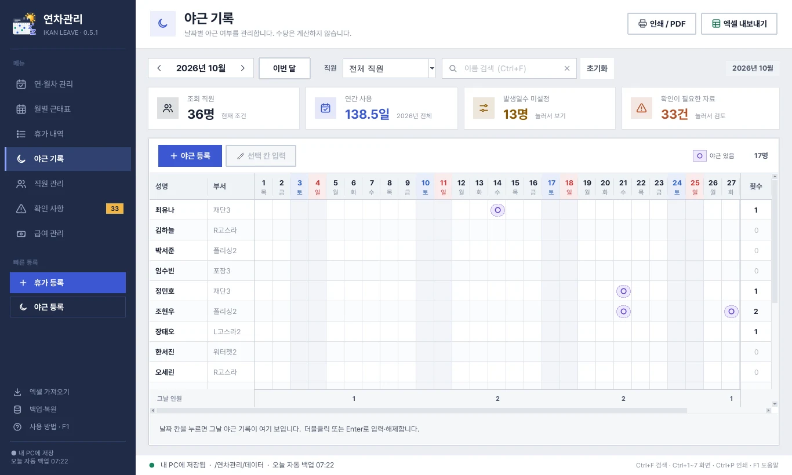
날짜 칸을 더블클릭해 야근 있음 또는 야근 기록 해제를 선택합니다. 기록한 날짜는 ○로 표시됩니다. 여러 명 등록도 지원합니다.
야근은 날짜별 여부와 메모만 관리합니다. 금액·시급·수당은 계산하지 않습니다.
9.3 휴가 내역 수정 순서
조회 연도와 직원 또는 이름 검색을 설정합니다.
연차·반차·대체휴무·기타 필터로 원하는 기록을 찾습니다.
행을 선택하고 선택 수정을 누르거나 더블클릭합니다.
직원·일자·구분·메모를 확인해 수정합니다.
저장 후 월별표나 연·월차 관리에서 결과를 확인합니다.
선택 삭제를 누르면 대상 직원·날짜·구분을 확인하는 창이 열립니다. 확인 후에 삭제되며 변경 이력에 삭제 전 내용이 남습니다. 자동으로 되돌리는 단추는 없으므로 잘못 삭제했다면 이력을 확인해 다시 등록하거나 필요한 백업을 검토하세요. 백업 복원은 해당 한 건만이 아니라 전체 데이터를 교체합니다.
9.4 야근과 휴가의 관계
휴가와 야근은 서로 다른 기록입니다. 야근 여부를 등록하거나 해제해도 연차 차감량이 바뀌지 않습니다. 휴가 기록을 비워도 야근 기록을 함께 지우지는 않습니다.
CHAPTER 10
직원 정보와 표시 순서
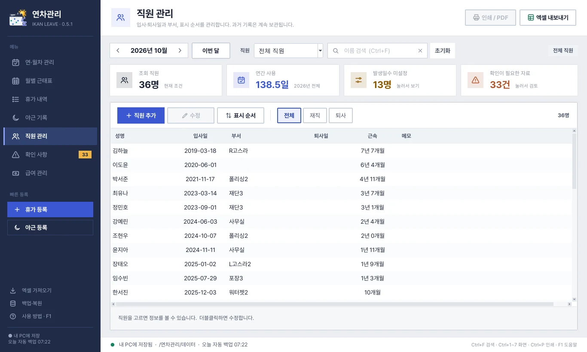
10.1 직원 정보
직원 관리 → 직원 추가에서 성명·입사일·부서를 입력합니다. 기존 직원은 선택 후 선택 수정으로 이름·부서·입사일·퇴사일·메모를 수정합니다.
과거 기록을 보존하기 위해 직원 삭제 기능은 두지 않았습니다. 퇴사 직원은 퇴사일을 입력해 관리합니다. 퇴사일 이후에는 새 휴가·야근 기록 등록을 막습니다.
10.2 직원 추가 후 진행할 일
조회 연도·월을 확인한 뒤 직원을 추가합니다.
직원 정보에서 성명·부서·입사일이 정확한지 확인합니다.
연·월차 관리에서 해당 연도의 발생·이월일수를 별도로 설정합니다.
필요한 경우 표시 순서 창에서 위치를 조정합니다.
월별표·야근표에 표시되는지 확인합니다.
같은 이름을 중복 등록하지 않으며 이름의 공백을 정리해 비교합니다. 동명이인이나 괄호로 부서를 구분한 기존 이름은 임의로 합치지 말고 현재 등록 상태를 먼저 확인하세요. 입사일·퇴사일은 YYYY-MM-DD로 입력하며 퇴사일을 입사일보다 빠르게 설정할 수 없습니다.
재직·퇴사 필터는 오늘 날짜와 퇴사일을 기준으로 구분합니다. 과거 월을 조회할 때의 직원 구성과 현재 재직 직원 수가 다를 수 있습니다. 월별표·야근표는 가져온 월별 구성원과 기록을 이용하므로 연간 조회 대상과도 인원이 다를 수 있습니다.
10.3 직원 표시 순서
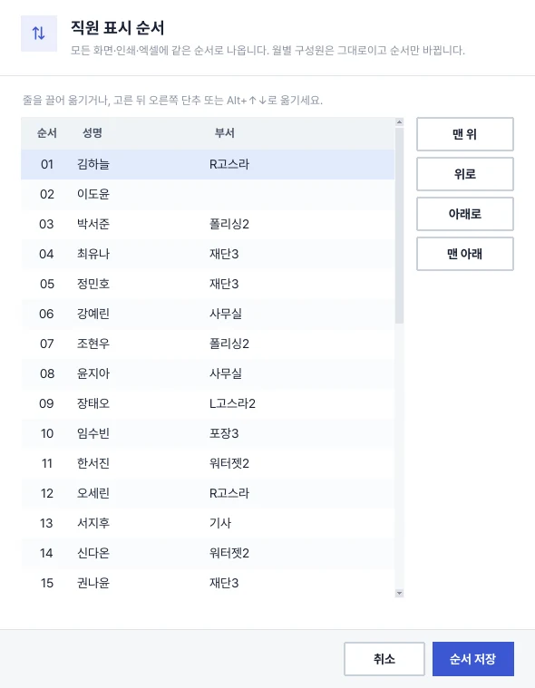
직원 관리 → 표시 순서를 엽니다.
직원을 선택하고 줄을 끌어 옮기거나 맨 위·위로·아래로·맨 아래 단추를 사용합니다.
Alt+↑·Alt+↓로도 이동할 수 있습니다.
순서 저장을 누릅니다.
순서는 종료 후에도 유지되고 백업·복원에도 포함됩니다. 연·월차 관리, 월별표·야근표와 해당 인쇄·엑셀에 반영됩니다. 월별 구성원은 그대로이며 순서만 바뀝니다. 이후 추가한 직원은 설정된 직원들 뒤에 표시됩니다. 휴가 내역은 날짜 기준 정렬을 유지합니다.
CHAPTER 11
인쇄와 PDF 저장
연·월차 관리, 월별 근태표, 휴가 내역, 야근 기록에서 사용할 수 있습니다.
조회 기간과 상단 직원 선택을 확인하고 이름 검색을 비웁니다.
인쇄 / PDF 또는 Ctrl+P를 누릅니다.
브라우저에서 열린 인쇄용 문서를 확인합니다.
문서 위쪽 인쇄 / PDF 저장을 누릅니다.
출력 대화상자에서 프린터 또는 PDF 저장을 선택합니다. 기본 양식은 A4 가로입니다.
| 인쇄 양식 | 구성 |
|---|---|
| 연차 관리 대장 | 직원별 발생·이월·사용·잔여와 1~12월 사용일 |
| 연차·근태 관리표 | 해당 월 기록, 차감·연간 잔여, 그날 인원, 메모 상세 |
| 휴가 사용 내역 | 조회 연도 전체의 월별 내역·소계, 직원별 합계 |
| 야근 기록표 | 해당 월 야근 날짜, 직원별 횟수, 그날 인원, 메모 상세 |
인쇄 미리보기에서 선택할 수 있는 항목은 다음과 같습니다.
- 결재란: 담당·검토·승인 칸을 표시합니다.
- 흑백 프린터용: 테두리 모양으로 종류를 구분합니다.
- 메모 상세: 월별표·야근표의 상세 메모를 넣거나 뺍니다.
- 직원별 합계: 휴가 내역의 직원별 합계를 넣거나 뺍니다.
참고
크롬 또는 엣지에서 문서를 열어 확인하세요. 생성된 인쇄용 HTML은 만든 시점의 사본입니다. 이후 기록을 수정했다면 프로그램에서 인쇄용 문서를 다시 생성합니다.
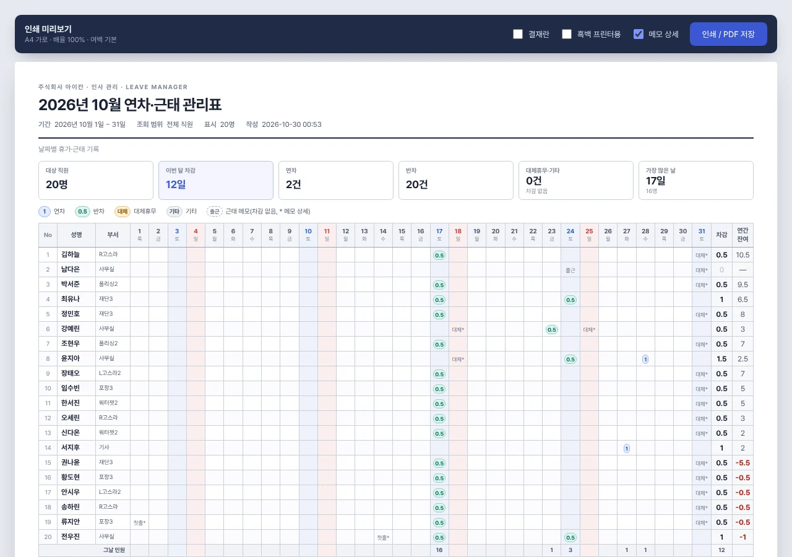
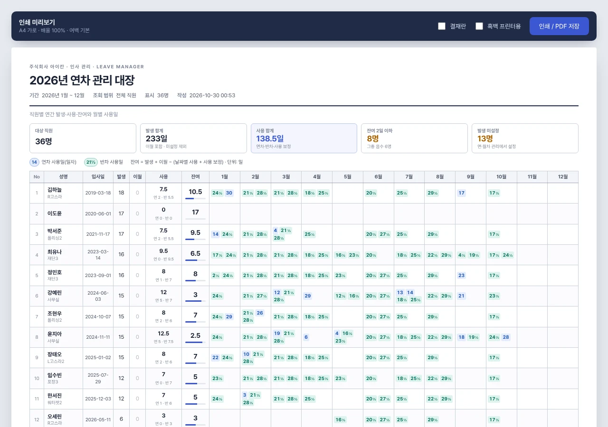
CHAPTER 12
제공 양식으로 엑셀 내보내기
상단 엑셀 내보내기에서 양식을 선택하고 .xlsx로 저장합니다.
| 양식 | 범위와 내용 |
|---|---|
| 연간대장 | 조회 연도 전체. 직원별 연차·반차 두 줄, 사용 날짜·사용·잔여 |
| 월별 연차관리대장 | 조회 연도·월의 직원과 날짜별 기록 |
| 야근수당 관리대장 | 조회 연도·월의 야근 여부. 수당 계산 없음 |
원본 양식은 프로그램에 포함되어 있어 매번 선택할 필요가 없습니다. 이름 검색을 비우고 전체 직원 또는 한 직원을 선택한 뒤 내보냅니다.
- 연간대장의 날짜가 28칸을 넘으면 같은 직원의 계속 행으로 이어 씁니다.
- 이월·사용 보정은 별도 이월·보정 시트에 보존합니다.
- 날짜·구분·메모는 기록상세 시트에 보존합니다.
- 발생일수는 회사에서 설정한 현재 값이며 입사일로 새로 추정하지 않습니다.
- 엑셀 내보내기는 현재 자료의 사본을 저장하는 기능입니다. 내보낸 엑셀에서 수정한 값이 프로그램에 자동 반영되지는 않습니다.
12.1 인쇄와 엑셀의 차이
| 구분 | 인쇄 / PDF | 엑셀 내보내기 |
|---|---|---|
| 목적 | 보기 쉬운 보고·결재·출력 | 제공된 기존 양식의 엑셀 사본 저장 |
| 연간 모양 | 직원 한 줄과 월별 사용일 묶음 | 직원마다 연차·반차 두 줄과 개별 날짜 칸 |
| 결재란·흑백 선택 | 미리보기에서 선택 | 인쇄 미리보기의 선택 항목이 자동 적용되지 않음 |
| 프로그램에 다시 반영 | PDF를 수정해도 반영되지 않음 | 내보낸 파일을 수정해도 자동 반영되지 않음 |
| 데이터 전체 백업 | 아님 | 아님 |
팁
자료를 안전하게 보관하려면 별도의 .db 백업을 사용하세요. 인쇄물·엑셀 사본만으로 직원 순서·확인 사항·변경 이력까지 전체 복원하는 것은 지원하지 않습니다.
CHAPTER 13
추가 엑셀 가져오기와 확인 사항
13.1 추가 자료 가져오기
엑셀 가져오기에서 지원하는 연간대장·월별표·야근표를 선택합니다. 같은 구조의 파일을 함께 선택할 수 있습니다. 첫 연도 자료는 연간대장과 월별표를 함께 선택하세요.
- 월별표가 있는 연도는 월별표를 사용량 기준으로 삼습니다.
- 동일한 내용의 파일은 건너뜁니다.
- 기존 직원·날짜·메모와 충돌하면 현재 값을 보존하고 확인 사항에 남깁니다.
- 수정한 엑셀을 재가져와도 현재 자료 전체를 자동 교체하지 않습니다.
- 새 파일에 없는 기록을 자동 삭제하지 않습니다.
- 읽기나 검증이 실패하면 이번 가져오기 전체를 취소합니다.
13.2 확인 사항 처리
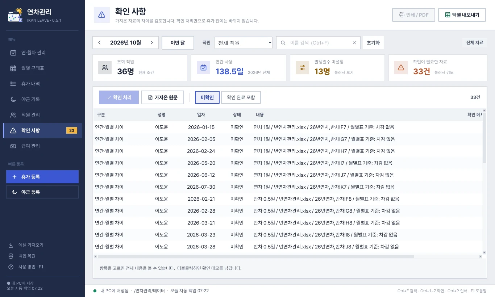
확인 사항에서 날짜 차이, 이름 확인, 과거 집계 보정 등을 검토합니다. 해당 항목을 선택해 확인 메모를 저장합니다.
주의
확인 처리는 휴가 기록이나 잔여일수를 바꾸지 않습니다. 실제 수정은 해당 직원·휴가·발생일수 화면에서 수행합니다. 가져온 원문 보기는 원본 값과 수식을 읽기 전용으로 보여 주며 수식을 실행하지 않습니다.
13.3 포함된 초기 자료의 기준
초기 2026년 사용량은 월별표 기준, 발생일수·입사일은 연간대장 기준입니다. 연간대장에만 있는 2026년 날짜는 중복 차감하지 않고 확인 사항에 남겼습니다. 출근·대체근무·X·첫출근 등은 근태 메모로 보존합니다. 과거 연도의 날짜 합계와 저장 집계가 다른 항목은 사용 보정과 확인 사항을 함께 확인하세요.
CHAPTER 14
저장·백업·복원
14.1 저장
입력창에서 저장을 누른 내용은 즉시 데이터 파일에 반영되고 프로그램을 다시 실행해도 유지됩니다. 현재 데이터 파일의 위치는 아래 상태줄에서 확인합니다.
14.2 백업
백업·복원 → 백업 파일 저장으로 직원·휴가·야근·확인 사항·원문·표시 순서·변경 이력을 하나의 .db 파일에 보관합니다. 외장 저장장치 등 별도 위치에도 사본을 보관하세요.
프로그램 시작 시 하루 한 번, 가져오기·복원 전에는 데이터/자동백업에 자동 백업합니다. 자동 백업과 같은 PC의 데이터는 PC 고장 때 함께 손실될 수 있으므로 별도 위치의 백업도 필요합니다.
14.3 복원
주의
백업·복원 → 백업에서 복원은 현재 자료 전체를 선택한 백업 내용으로 교체합니다. 여러 파일의 일부 내용을 합치는 기능은 아닙니다. 현재 자료는 교체 전에 자동 백업하며, 손상된 파일이나 지원하지 않는 데이터는 적용하지 않습니다.
데이터 폴더 열기로 저장 위치를 확인하고, 변경 이력 보기에서 기록한 작업을 살펴볼 수 있습니다.
CHAPTER 15
자주 묻는 질문
Q. 잔여가 미설정으로 나옵니다.
해당 연도의 발생일수를 설정했는지 확인합니다.
Q. 같은 날짜를 등록할 수 없습니다.
해당 직원의 휴가 내역 또는 야근 기록에서 기존 기록을 확인합니다.
Q. 일괄 등록이 저장되지 않습니다.
중복·입사 전·퇴사 후 날짜가 표시된 직원과 선택 대상을 확인합니다.
Q. 날짜 칸이 보이지 않습니다.
날짜 영역을 가로로 스크롤합니다. 월별표·야근표의 이름과 합계 열은 고정됩니다.
Q. 월을 바꿔도 연·월차 관리 내용이 같습니다.
연·월차 관리는 해당 연도 전체를 조회합니다.
Q. 검색 결과와 인쇄 결과가 다릅니다.
인쇄·엑셀은 상단 직원 선택 기준입니다. 검색을 비우고 출력 범위를 확인합니다.
Q. 새 버전에서 최근 입력 기록이 없습니다.
새 폴더의 초기 자료인지 확인하고 이전 버전의 백업을 복원합니다.
Q. 다른 PC로 옮긴 뒤 자료가 없습니다.
실행 파일뿐 아니라 데이터·_internal을 포함한 폴더 전체를 옮겼는지 확인합니다.
Q. 엑셀에서 고친 내용이 프로그램에 보이지 않습니다.
내보낸 엑셀과 프로그램 데이터는 자동 동기화하지 않습니다.
CHAPTER 16
단축키
| 단축키 | 기능 |
|---|---|
| Ctrl+1~6 | 왼쪽 메뉴의 화면 이동 |
| Ctrl+F | 이름 검색 |
| Ctrl+P | 현재 화면 인쇄 / PDF |
| F5 | 새로 고침 |
| F1 | 사용 방법 |
| 표에서 화살표 | 선택 칸 이동 |
| 표에서 Enter | 선택 칸 입력 |
| 직원 순서 창에서 Alt+↑·Alt+↓ | 직원 순서 이동 |
| 입력창에서 Esc | 취소·닫기 |
CHAPTER 17
자주 하는 업무별 예시
17.1 예시 A · 직원 한 명의 반차 등록
연·월차 관리에서 조회 연도를 선택합니다.
직원 목록에서 한 명을 선택합니다.
반차 행의 빈 사용일 칸을 더블클릭합니다.
날짜와 메모를 입력하고 구분이 반차인지 확인합니다.
저장합니다.
반차 행에 날짜가 추가되고 사용량이 0.5일 늘었는지 확인합니다.
해당 월의 월별표와 휴가 내역에서도 같은 기록을 확인합니다.
17.2 예시 B · 직원 여러 명에게 같은 날 연차 등록
왼쪽 휴가 등록을 엽니다.
대상 직원을 체크합니다.
날짜와 연차 구분을 선택합니다.
중복·입사 전·퇴사 후 안내가 없는지 확인합니다.
요약의 인원과 ‘연차 1일씩’을 확인합니다.
저장하고 월별표에서 각 직원의 기록을 확인합니다.
17.3 예시 C · 잘못 등록한 연차 날짜 변경
휴가 내역에서 조회 연도와 직원을 고릅니다.
기존 날짜의 행을 선택하고 선택 수정을 누릅니다.
올바른 일자로 바꾸고 저장합니다.
기존 날짜에서는 기록이 없어지고 새 날짜로 옮겨졌는지 확인합니다.
같은 구분·일수로 날짜만 옮겼다면 해당 연도 내 총 사용량은 유지됩니다.
17.4 예시 D · 월별표에 출근 메모만 남기기
월별 근태표에서 직원과 날짜 칸을 선택합니다.
입력창에서 근태 메모만을 선택합니다.
‘대체근무’ 등 메모를 입력하고 저장합니다.
차감 없이 메모가 표시되는지 확인합니다.
기존 휴가가 있던 날짜라면 휴가가 메모로 대체된 점도 확인합니다.
17.5 예시 E · 한 직원의 연간대장 엑셀 저장
상단에서 원하는 연도와 직원을 선택합니다.
이름 검색어를 지웁니다. 직원 선택은 그대로 둡니다.
엑셀 내보내기에서 연간대장을 선택합니다.
저장 폴더와 파일 이름을 지정합니다.
엑셀에서 성명·연도·날짜·사용·잔여를 확인합니다.
이월·보정 및 기록상세 시트도 확인합니다.
17.6 예시 F · 직원 순서를 바꾸고 다음 실행에서 확인
직원 관리에서 표시 순서 창을 엽니다.
직원을 원하는 위치로 이동합니다.
순서 저장을 누릅니다.
연·월차 관리와 월별표에서 같은 직원들의 표시 순서를 확인합니다.
종료 후 다시 실행해 순서가 유지되는지 확인합니다.
CHAPTER 18
월말·연말 점검 순서
18.1 월말
대상 연도·월과 전체 직원 범위를 확인합니다.
휴가 내역과 월별 근태표의 날짜·구분·차감을 대조합니다.
근태 메모를 휴가로 잘못 넣은 항목이 없는지 확인합니다.
야근 기록의 날짜와 메모를 확인합니다.
확인 사항의 미확인 항목을 검토하고 필요한 실제 수정을 진행합니다.
인쇄 또는 엑셀 사본을 저장합니다.
별도 위치에 데이터 백업을 저장합니다.
18.2 연말·새 연도 전환
해당 연도 전체의 연·월차 관리와 휴가 내역을 확인합니다.
발생·이월·사용 보정과 잔여를 검토합니다.
연간대장 엑셀과 필요한 보고서를 보관합니다.
전체
.db백업을 저장합니다.조회 연도를 바꾸고 새 연도의 확정 발생·이월 값을 설정합니다.
과거 연도 기록을 그대로 보존한 상태에서 새 연도 입력을 시작합니다.
CHAPTER 19
문제가 생겼을 때 확인하는 순서
19.1 기록이 보이지 않을 때
조회 연도가 맞는지 확인합니다.
월별표·야근표라면 월도 확인합니다.
상단 직원 선택과 이름 검색을 확인합니다.
화면 필터를 전체로 바꿉니다.
F5로 새로 고침합니다.
새 프로그램 폴더를 사용 중이라면 이전 백업을 복원했는지 확인합니다.
아래 상태줄의 데이터 폴더가 평소 사용하던 위치인지 확인합니다.
주의
조회 조건을 확인하기 전에 원본 엑셀을 반복해서 가져오지 마세요. 재가져오기는 현재 자료를 통째로 되돌리는 기능이 아닙니다.
19.2 잔여가 예상과 다를 때
연간 기준의 잔여와 월 사용량을 비교한 것은 아닌지 확인합니다.
발생일수가 미설정인지 실제 0일인지 구분합니다.
해당 연도의 발생·이월·사용 보정 값을 확인합니다.
휴가 내역에서 직원의 연차·반차·대체휴무·기타를 확인합니다.
연차·반차 날짜와 메모를 검토하고 실제 오류가 있는 항목만 수정합니다.
주의
확인 사항에 확인 표시만 남기거나 근거 없이 보정 값을 넣어 잔여를 맞추지 말고, 실제 설정·날짜 내역을 먼저 대조하세요.
19.3 인쇄·엑셀 출력이 예상과 다를 때
상단의 연도·월과 직원 선택을 확인합니다.
이름 검색을 비웁니다.
화면 필터가 출력 범위를 뜻하지 않는다는 점을 확인합니다.
인쇄와 엑셀 중 필요한 출력 방식을 선택했는지 확인합니다.
기록을 바꾼 뒤라면 이전 미리보기나 엑셀을 다시 보는 대신 새로 생성합니다.
CHAPTER 20
파일과 보관 위치
| 파일·폴더 | 역할 |
|---|---|
| 연차관리.exe | 프로그램 실행 파일 |
| _internal | 실행에 필요한 구성 파일·화면 자료·내장 양식 |
| 데이터/연차관리.db | 현재 사용 중인 전체 데이터 |
| 데이터/자동백업 | 프로그램이 생성하는 자동 백업 |
| 데이터/인쇄미리보기 | 생성 시점의 인쇄용 HTML 사본 |
| 사용자가 저장한 .db | 수동 전체 백업. 별도 위치 보관 권장 |
| 사용자가 저장한 .xlsx | 양식별 엑셀 출력 사본 |
| 브라우저에서 저장한 .pdf | 인쇄용 보고서 사본 |
참고
파일 이름이 같아도 폴더가 다르면 서로 다른 데이터일 수 있습니다. 복원하거나 다른 PC로 옮기기 전에는 날짜와 저장 위치를 확인하세요.
CHAPTER 21
기능 범위와 제한
| 구분 | 지원 범위 |
|---|---|
| 휴가 단위 | 연차 1일, 반차 0.5일, 대체휴무·기타 0일 |
| 같은 날짜 휴가 | 직원당 하루 한 건. 오전·오후 별도 반차 두 건은 지원하지 않음 |
| 발생·이월 설정 | 회사에서 확정한 값을 해당 연도에 직접 설정 |
| 야근 | 날짜별 여부와 메모. 수당·시급 계산 없음 |
| 사용일 연동 | 연·월차 관리·월별표·휴가 내역은 같은 휴가 기록 사용 |
| 출력 | 제공 양식 엑셀, 브라우저 인쇄·PDF |
| 가져오기 | 지원하는 구조의 연간대장·월별표·야근표 |
| 백업 복원 | 전체 자료 교체. 일부 기록만 합치는 복원은 지원하지 않음 |
| 사용 환경 | 로컬 PC. 여러 PC의 동시 편집·자동 동기화 없음 |
CHAPTER 22
용어 정리
| 용어 | 뜻 |
|---|---|
| 발생 | 해당 연도에 설정한 연차 발생일수 |
| 이월 | 잔여 계산에 더하는 이월 값 |
| 날짜별 사용 | 날짜로 등록한 휴가의 차감 합계 |
| 사용 보정 | 총 사용에 추가하는 조정 값 |
| 총 사용 | 날짜별 사용과 사용 보정의 합계 |
| 잔여 | 발생 + 이월 − 총 사용 |
| 미설정 | 발생일수가 등록되지 않은 상태. 실제 숫자 0과 다름 |
| 근태 메모 | 차감 없이 날짜별로 남기는 출근·근무 관련 메모 |
| 확인 사항 | 가져온 자료의 차이·모호한 내용 등을 검토하기 위한 항목 |
| 내보내기 | 현재 자료를 엑셀 또는 보고서 사본으로 저장하는 작업 |
| 복원 | 현재 전체 데이터를 선택한 백업 내용으로 교체하는 작업 |
아이칸 연차관리 사용 설명서 · 기준 버전 0.4.0 · 정리 2026-10-30 · 주식회사 아이칸 사내용